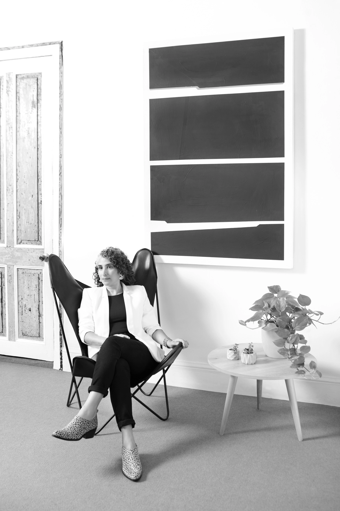

Dirección
Alejandra Maguiña
Arquitecta colegiada CAP 17576, fundadora y directora general de DARQA Arquitectos.

Diseño con visión creativa y experiencia operativa real.
Diseñadora de interiores y arquitecta, con experiencia en diseño y gestión de proyectos comerciales y gastronómicos.
1999Diseñadora de Interiores · SENCICO
2005Arquitecta · Universidad Ricardo Palma · CAP 17576
2007Fundación de DARQA Arquitectos
2011–2015Grupo Delosi · Gestión de proyectos, Diseño y Pre-Construcción
2016Relanzamiento de DARQA en arquitectura comercial
2021Cofundación de DLM Arquitectos
2023Diplomado en Gestión de Proyectos Inmobiliarios · ESAN
2025–2026Máster en Diseño de Espacios Gastronómicos · Barcelona Culinary Hub / Universitat de Barcelona